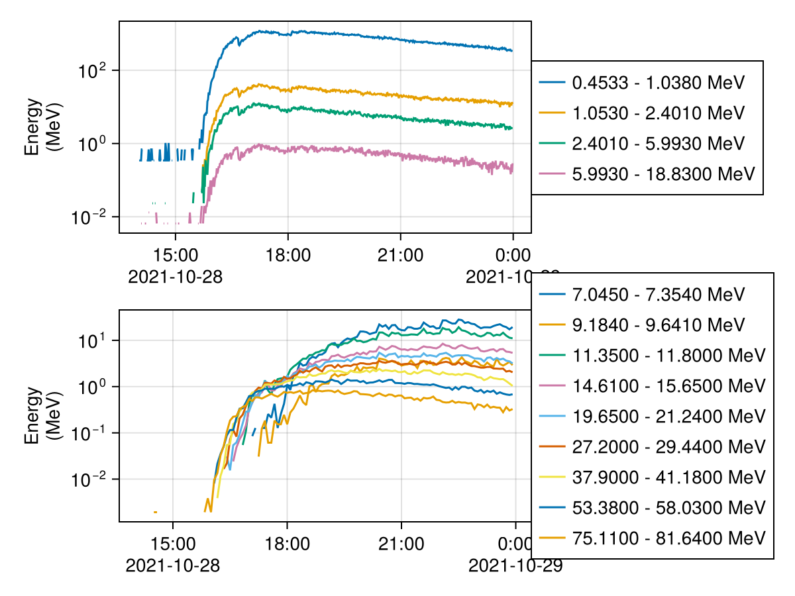
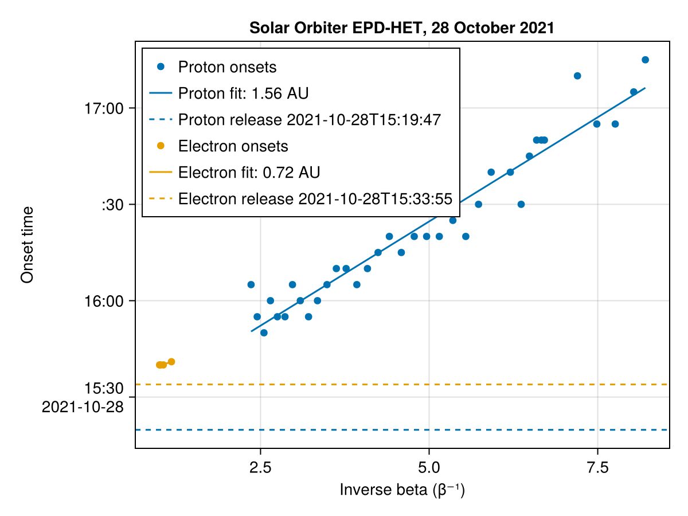

Velocity Dispersion Analysis (VDA)
Particles released together from the Sun arrive at energy-dependent times, faster ones first. Fitting onset times against inverse speed, t = t₀ + (s/c) β⁻¹, gives the release time t₀ (intercept) and the path length s (slope); see vda.
using SolarEnergeticParticle
using CDAWeb, Dates, TimeseriesUtilities
using SpacePhysicsMakie, CairoMakieData
Solar Orbiter EPD-HET sunward fluxes; the channel energies are the DEPEND_1 coordinate, here the lower bin edges.
tmin, tmax = DateTime(2021, 10, 28, 14), DateTime(2021, 10, 29)
bg = (DateTime(2021, 10, 28, 14), DateTime(2021, 10, 28, 15))
het = cda"SOLO_L2_EPD-HET-SUN-RATES"
H = tmean(het["H_Flux"](tmin, tmax), Minute(5))
e = tmean(het["Electron_Flux"](tmin, tmax), Minute(1))
f = Figure()
linesplot(f[1, 1], replace(e, 0 => NaN)) # zeros cannot show on log axes
linesplot(f[2, 1], replace(H[1:4:end, :], 0 => NaN))
f
Protons
Onsets by the n-sigma method over 3 consecutive 5-minute averages:
vda_proton = vda(NSigma(), H, bg; N = 3)
(; vda_proton.release_time, vda_proton.path_length, vda_proton.release_time_error, vda_proton.path_length_error)(release_time = Dates.DateTime("2021-10-28T15:19:47.322"), path_length = 1.5602498731868522, release_time_error = 182.2059680801061, path_length_error = 0.07048559046833248)Electrons
vda_electron = vda(e, bg; N = 10, particle = :electron)
(; vda_electron.release_time, vda_electron.path_length)(release_time = Dates.DateTime("2021-10-28T15:33:54.820"), path_length = 0.7160307833867945)Visualization
function vdaplot!(ax, r; label)
scatter!(ax, r.inverse_betas, r.onsets; label = "$label onsets")
fit = unix2datetime.(r.intercept .+ r.slope .* r.inverse_betas)
lines!(ax, r.inverse_betas, fit; label = "$label fit: $(round(r.path_length; digits = 2)) AU")
hlines!(ax, Dates.value(r.release_time); linestyle = :dash, label = "$label release $(round(r.release_time, Second))")
end
f = Figure()
ax = Axis(f[1, 1]; xlabel = "Inverse beta (β⁻¹)", ylabel = "Onset time", title = "Solar Orbiter EPD-HET, 28 October 2021")
vdaplot!(ax, vda_proton; label = "Proton")
vdaplot!(ax, vda_electron; label = "Electron")
axislegend(ax; position = :lt)
f